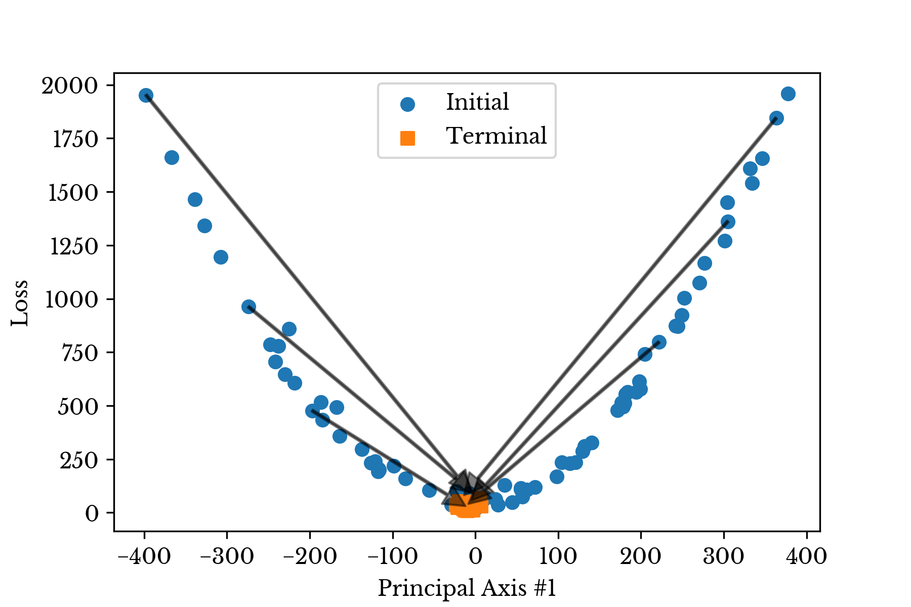
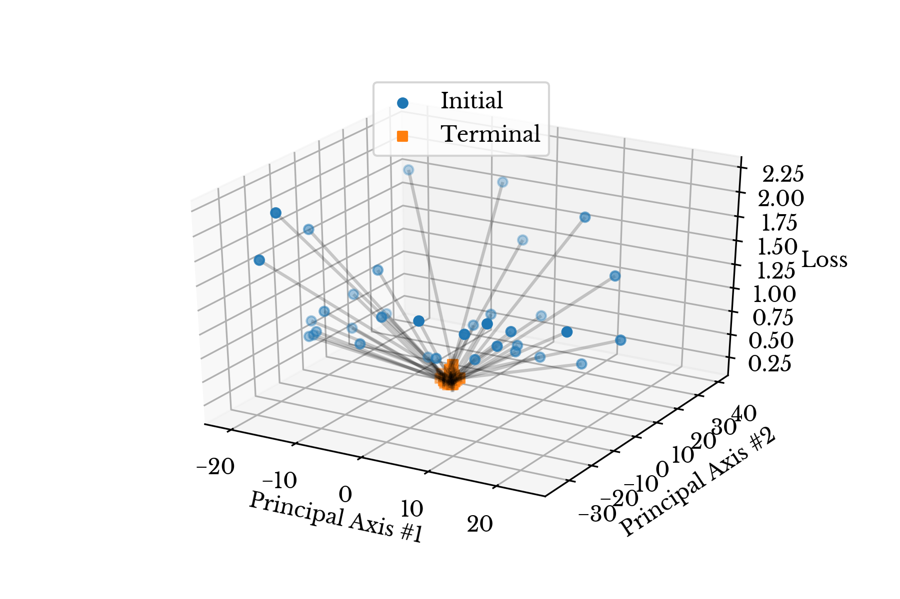

The Shooting Regressor; Randomized Gradient-Based Ensembles
Wed, 16 Sep 2020
Computer Science, Data Science, Machine Learning, Mathematics, Statistics
Gradient boosting stands apart from many other supervised learning approaches in some regard. It is an ensemble method, However, the ensemble is constructed sequentially. It estimates a target value. But, it does so indirectly through the gradient.
The gradient boosting machine makes an initial guess that is subsequently refined by a sequence of weak estimators. The
i-th estimator in the sequence crudely approximates the gradient at the
i-th step of a gradient descent process. The final prediction is then the initial guess after refinement by the ensemble.
Consider a gradient boosting machine that minimizes the mean squared error. The error function may be defined as
\[\displaylines{L(\hat{Y})= \frac{1}{2}\left\lVert \hat{Y} - Y \right\rVert _ 2 ^ 2 }\ .\]
The gradient of this loss function with respect to the current estimate \(\hat{Y}\) is simply
\[\displaylines{G_L(\hat{Y})= \hat{Y} - Y }\ .\]
Note that this is nothing more than the current residual. If the current residual can be estimated with accuracy, then estimation of the true target value is trivial; simply add the initial prediction to the estimated gradient. This suggests that estimation of the gradient is likely to be at least as difficult as estimation of the original target.
Consider an initial guess. Given a target matrix with
m samples, this initial guess is an
mx1 vector. The point \((I, L(I))\) is a point on a surface of an
(n+1)-dimensional paraboloid with a vertex at \((Y, 0)\). The gradient boosting machine attempts to move down the gradient on the surface of this paraboloid towards the vertex.
An alternative approach is presented here. A cloud of initial values surrounding the vertex are sampled. From each of these positions, the gradient is approximated. A vector in this direction is shot out from each initial position arriving in a terminal position near the vertex. This "shooting regressor" then aggregates these multiple solutions into a final solution. Figures 1 and 2 respectively depict this process with 1D and 2D projections of the initial and terminal vectors using PCA.

Figure 1: 1D Projection of Initial and Terminal Values

Figure 2: 2D Projection of Initial and Terminal Values
The shooting regressor leverages the gradient in order to obtain an ensemble of weakly correlated estimators. By approaching the loss function minimum from multiple initial positions, a diversity of solutions is provided that help reduce error due to variance. The scale of the gradient vectors controls the amount of correlation in the ensemble. This parameter gives direct control over a trade-off between correlation in the ensemble and precision in estimating the gradient. Methods to estimate optimal values for this parameter are discussed in the paper.
Please refer to the paper and source code for more details.
Link to Paper.
Source Code.